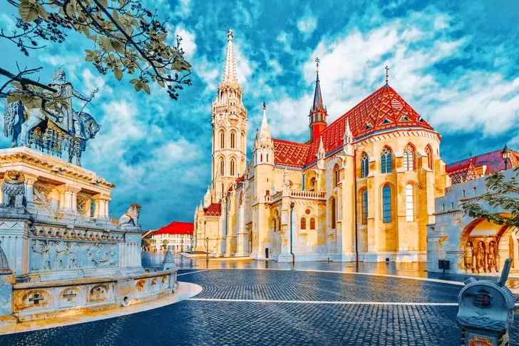

Більшість людей мріє про те, щоб подорожувати якомога частіше. Хтось хоче побувати на найгарніших пляжах, хтось — милуватись старовинними замками. Побачити історичні місця чи дослідити дику природу. Всі ми чекаємо від подорожі різного, але точно всі чогось чекаємо. Плануємо, мріємо, уявляємо. І як зробити, аби отримати бажане в реальності?
Вивчити принципи правильної подорожі, які стануть в пригоді кожному:
Угорщинна
Угорщина - це одна з найкрасивіших країн Центральної Європи, яка користується величезним успіхом і популярністю серед туристів з усіх країн світу.
Її столиця - однез найкрасивіших міст світу, якегордо носить назву «Королева Дунаю». Саме в цій країні знаходиться найбільше озеро в Центральній частині Європи - озеро Балатон, яке вважається справжнім прісноводним морем і справжнім раєм для людей різного віку, для любителів різних водних видів спорту і розваг.
Всім відома гора Токай також розташована в Угорщині. Прославилася вона своїми печерами, унікальними виноградниками, винними погребами та вишуканими винами, які вже кілька століть розбурхують уяву справжніх цінителів виноробного мистецтва.
Казка про живу воду теж родом із чудесної країни Угорщина, адже саме тут знаходиться більше 500 джерел, які мають унікальні цілющі властивості. Фортеці, замки, палаци, бастіони, старовинні церкви і монастирі вражають кожного туриста своєю пишністю і неперевершеною красою. Безліч туристів до Угорщини приваблюють величезну кількість форм народного мистецтва, а також традиційні паради верхової їзди.
У цій країні дуже вигідні ціни на різні товари в порівнянні з їх вартістю в країнах Східної Європи. Угорщина - це одна з небагатьох європейських країн, в архітектурі якої гармонійно поєднуються колоритні купола і башточки, що нагадують казку про Аладіна, і респектабельні ділові квартали міст.
Причин, за якими ми радимо вам відвідати Угорщину, дуже багато. Це чудова і заповідна природа Угорських національних парків, величезна кількість термальних джерел, на базі яких на сьогоднішній день створена широко розвинена курортно-оздоровча база, а також багатющаархітектурно-культурна спадщина старовинних міст.
У першу чергу, рекомендуємо всім туристам відвідати найголовнішеугорське місто - Будапешт, який велично розкинувся на берегах Дунаю, за що отримав назву «Королева Дунаю». Місто ділиться на кілька частин: Буда і Пешт. Пештська частинастолиці розташована на рівнинній території, Буда ж, навпаки, - на пагорбах. Особливість архітектурного ансамблю цього міста полягає в тому, що тут гармонійно сусідять будівлі, побудовані в епоху Середньовіччя, архітектурні пам'ятники XVIII століття і сучасні споруди. Головні пам'ятки, які всі туристи поспішають побачити в Будапешті , - це собор Святого Матяша, Рибацький Бастіон, монумент Святої Трійці, Будайська фортеця (Королівський палац), в якій зараз відкрито кілька цікавих музеїв. Побачивши ці та багато інших визначних пам'яток Будапешта, навіть найдосвідченіший любитель старовинного мистецтва забуде про втому і часу.
Будапешт заслужено входить до списку Всесвітньої спадщини ЮНЕСКО. У самому центрі столиці, посеред Дунаю і між двома мостами Арпад і Мартіг, розкинувся відомий острів Маргіт. Спробуйте Угорщина автобусний тур
Побувавши в угорській столиці, рекомендуємо ще відправитися в екскурсію «Закрут Дунаю» та відвідати такі старовинні сербські міста, як Естергом, Вишеград і Сентендре, краса і атмосфера яких назавжди залишаться у вашій пам'яті. Адже місто Сентендре - це, так званий, музей під відкритим небом, на території якого знаходиться кілька чудових і відомих далеко за межами країни музеїв, таких як Угорський музей вина, музей марципанів, Музей кераміки. Вишеград - це місто, яке колись було столицею Угорщини. Тут зараз проводяться археологічні розкопки літньоїрезиденції королівської сім'ї. Естергом також деякий час був столицею, зараз тут знаходиться найбільший храм країни - Естергомськабазиліка, Музей Християнського Мистецтва.
Не менш насиченимстаровинними пам'ятками, славним історичним минулим, а також вишуканими винамиєі місто Егер, якезнаходиться в дуже мальовничій місцевості між гір Матра і Бюкк.
Будівля парламенту
Величезна неоготична будівля, рішення про спорудження якої було прийнято після об’єднання Буди та Пешту, є одним із найбільш упізнаваних пам’яток архітектури в усьому світі. Всередині налічується 691 приміщення, 29 сходів та 10 двориків. Інтер’єри багато прикрашені на середньовічний манер.
Що цікаво, резиденція уряду Угорщини вважається найбільшою будівлею в країні. Висота найвищого купола сягає 27 метрів, а діаметр – 20 метрів. Парламент складається з 691 кімнати, 29 сходів і 10 подвір'їв. Фасад прикрашають статуї правителів Угорщини та Трансільванії.
У приміщенні зберігаються 16 статуй королів країни, а також цінна корона святого Стефана, скіпетр і меч.
Рибальський бастіон
Рибальський бастіон - без сумнівів, одне з найвідоміших споруд в Будапешті.
Дивно, але ніякої риби і рибалок тут давно вже немає, тому туристів подібна назва часто збиває з пантелику.
Щоб розгадати цю загадку, кожному мандрівникові потрібно трохи зазирнути в історію міста.
Минуле цієї назви дійсно цікаве. Століття тому, в епоху Середньовіччя, тутешня площа була обнесена муром, який захищав частину міста від ворога.
На площі зазвичай торгували рибою місцеві рибалки, для яких така торгівля була єдиним ремеслом.
Як і будь-кому в будь-якому середньовічному місті, жителям доводилося періодично відбиватися від ворогів. При виникненні небезпеки городяни збиралися в ополчення, захищаючи рідний район. Місцевим рибалкам, зрозуміло, дісталася ділянка захисної стіни у площі, на якій вони постійно торгували.
У будь-який момент вони були готові кинути рибу і взятися за зброю.
Потім в кінці 19 століття місцеві архітектори перетворили укріплений бастіон на витвір мистецтва. Розташована поблизу церква Матяша вимагала гідного оточення, тому будайським зодчим довелося надати середньовічнійї будівлі розкішний вигляд.
У 1906 році крім красивих веж на площі з'явився пам'ятник королю Іштвану Святому, що гордо що сидить на коні.
Двадцяте століття нещадно обійшлося з архітектурною спадщиною: німецька авіація під час Другої Світової серйозно пошкодила будівлі Рибальського бастіону. Потрібні були роки, щоб відновити його і повернути колишній вигляд.
Після цього його не раз оновлювали і реконструювали, щоб захистити від впливу часу і сил природи.
Сьогодні Рибальський бастіон в Будапешті визнаний частиною Всесвітньої спадщини ЮНЕСКО. Сотні туристів з усіх куточків Європи і світу, відвідуючи Будапешт, заглядають до бастіону. Вишуканий білий парапет з широкими сходами і красивими вежами є одним з найбільш пам'ятних місць міста. Всі мандрівники з радістю ходять по площі, фотографуються на тлі старовинних будівель і отримують масу позитивних емоцій. Крім чарівних будівель, бастіон може похвалитися тим, що з нього відкривається чудовий вид на місто.
Розташований він на пагорбі, що надає гостям розкішну панораму міста.
